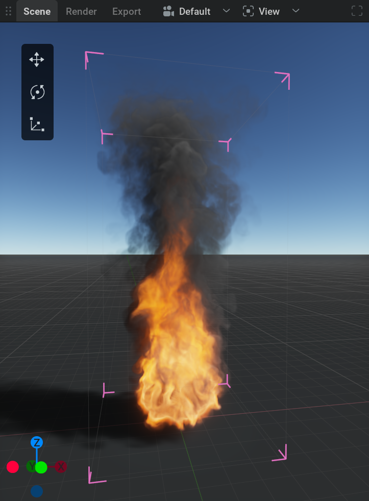
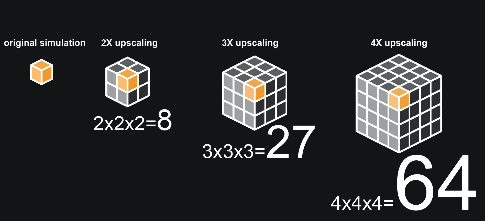
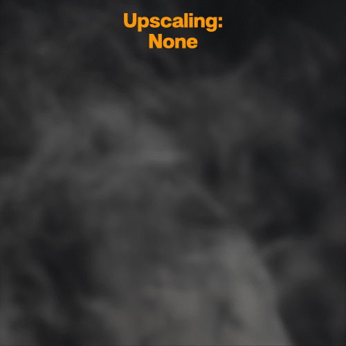
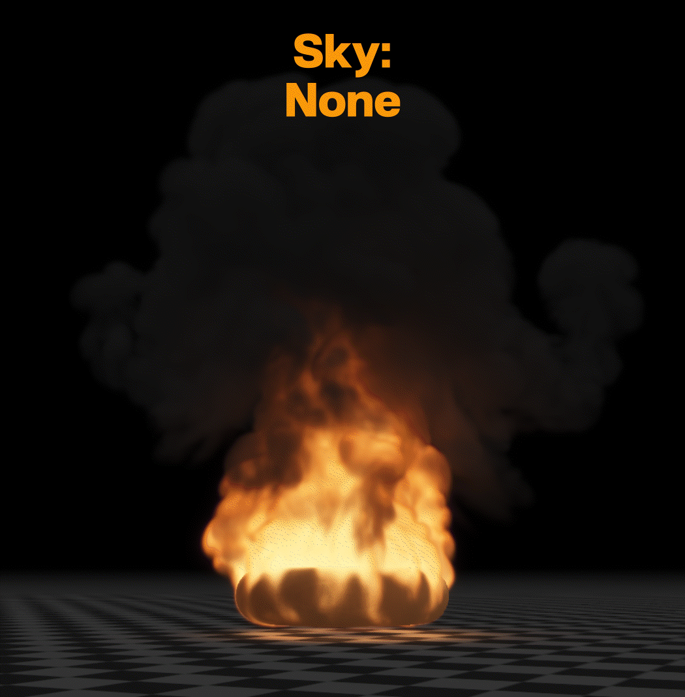

Getting Started#
Installing EmberGen#
Download#
If you have a license already go to https://jangafx.com/software/embergen/download/
Specify your desired release on the left (latest by default) and click the blue download button on the right.
To get your trial go to https://jangafx.com/software/embergen/try

There you’ll be greeted by a form!
Your e-mail address and the second checkbox (which allows us to store the information given in the form) are required.
After filling out the form, pick your operating system at the bottom (Windows or Linux) and click the Download EmberGen button.
The embergen-latest.exe file will be downloaded to your hard drive.
Installing#
Double click the .exe file.
Accept the agreement.
Click Next, Next, Install, Finish
If you left Launch EmberGen checked, the software will boot right away!
If you unchecked Launch EmberGen you can launch the software by double-clicking on the desktop shortcut.
If you also unchecked Create a desktop shortcut you can launch embergen by double-clicking on the EmberGen.exe file in the EmberGen folder usually found in C:/Program Files/JangaFX
Licensing#

After installation is complete, run EmberGen and in the Help menu, click License Manager… to launch it.
Within this license manager, enter your license key in the ‘Key’ text box.
Then press the Activate Key button. The status text will change from Deactivated to Activated if the license was activated successfully.
If any errors occur they will appear in yellow on the right. If you cannot get your key to activate, email us at support@jangafx.com using the blue Contact Support button in the top right corner with a screenshot of the errors.
If you don’t have a license key you can purchase one from our pricing page on our website. You can go there using the blue “Purchase A License” button!
Using Embergen#
Welcome to Embergen!
In this section, you will learn the basics of our software to get started making amazing effects for your games or movies.
Project Manager#

When you first open the software you’ll see the project manager. You can always get to or leave this screen using the home icon in the top left corner.
The Project Manager is where you can quickly get to presets or your project files by picking a category on the left.
Presets are, .ember, read-only, project files shipped with embergen.
They can serve as a nice starting point for the effects you want to create or as a reference to learn from.
Presets are stored in the presets folders within the EmberGen installation folder. (usually C:/Program Files/JangaFX/EmberGen)
Note that there is no difference between a preset and any other .ember file.
If you can’t find the project you are looking for, you can click the Open Project button to manually search for your .ember file using the file browser.
New Project will load the default preset. Like any preset everything about this can be altered so don’t worry if it doesn’t look like what you are aiming for.
You can save your presets with Ctrl+S or by going to File > Save
{kind=link}
User Interface#
Let’s have a look at the main user interface!
As you can see it is subdivided into four sections, the viewport, the timeline editor, the node editor and the properties panel.
All of these can be scaled to your liking, by holding down
 and dragging the edges of the section, or viewed full screen by clicking the Toggle panel fullscreen button
and dragging the edges of the section, or viewed full screen by clicking the Toggle panel fullscreen button  in the top right corner of each section.
in the top right corner of each section.
Viewport#
{kind=link}

This is where you can view your simulations, shapes, forces or anything that’s in the scene.
You can move the camera around by holding down  in the viewport and pressing Alt to pan, Ctrl to zoom and Shift to tilt.
in the viewport and pressing Alt to pan, Ctrl to zoom and Shift to tilt.
If you are used to another control scheme, in the top menu bar go to Settings>Preferences then in the Camera section you can change the Control Mapping to your liking.
On the top of the viewport, you will find a couple of tabs and dropdown menus:
Scene is the default tab where you can view and manipulate everything.
Render is the tab where you can preview what will be exported.
Export is the tab where the exported images can be viewed.
Right next to the Export tab is a dropdown menu to select the
 camera you want to look through.
camera you want to look through.The
 View dropdown menu will give you a list of things to show or hide in the viewport.
View dropdown menu will give you a list of things to show or hide in the viewport.If you are missing or annoyed by something in the viewport this is the first place to look!
Timeline Editor#

This is where time is visualized from left to right.
You can reset the simulation (revert to the beginning of the timeline) using
 or r
or r
{kind=link}
If you forget a shortcut you can hover your mouse over a button to see its shortcut key. Or go to the Shortcuts section in Settings>Preferences.
When playing from the start you can see a blue line moving. This indicates what the current time on the timeline is.
The numbers next to the buttons show the current time in frames and seconds. When clicking on the left one of these, the timeline will toggle from showing frames or showing seconds.
Note that a simulation always calculates from one frame to the next. This means you can’t play it backward or scrub through it.
Node Graph#

This is where the building blocks to create the simulation are managed.
The separate modules you see are called nodes. You can think of these as little machines with their own unique tasks. The machines combined are the factory that produces the end product.
The nodes are connected with wires passing data from one node to another.
To navigate around the Node Graph hold the  button and drag. You can use the scroll wheel to zoom in and out.
button and drag. You can use the scroll wheel to zoom in and out.
If you get lost you can use the  button in the top right corner to recenter the nodes and the
button in the top right corner to recenter the nodes and the  button to reset the zoom.
button to reset the zoom.
Select a node with
Box select a node by holding the
and dragging a box around the nodes.Delete a node by selecting it and then pressing the Delete key.
Copy and paste nodes with Ctrl + C and Ctrl + V.
Move nodes by holding the Left Mouse Button and dragging.
Disable a node using the on/off button in the top right corner of the node.
Connect nodes by
clicking and dragging from the connection pins on the sides of the nodes. Or by selecting multiple nodes and pressing Ctrl + LThe connection pins always state the node or node category it needs to be connected to.
Create a node by right-clicking in the node graph and selecting a node from the menu. Or by dragging from a connection pin to somewhere in the node graph. This way you’ll get a menu with all the nodes available for that type of connection.
{kind=link}
Properties Panel#

This is where the settings are for the selected node. (Or multiple nodes when selecting nodes of the same type.)
Node Details: This tab shows all the parameters for the selected node.
Every node has its own array of tabs organizing the parameters.
When looking for a specific parameter, you can easily find it using the Parameter Palette which opens by pressing Ctrl + P
You can change a parameter by either using
on the value, typing in a new value, and pressing Enter or clicking and dragging the value slider.You can also apply math within these text boxes. For example, typing 4*7/2+6-2 and pressing Enter will put a value of 18 in the parameter. This can be helpful for quickly multiplying a value or reducing it by half for example.
Some parameters aren’t values but dropdown menus which can be opened by clicking on them with the
. Then you can pick an option from the menu.There are also check boxes that can be simply clicked on or off.
Try leaving your cursor on a parameter name. This will show a text box with information on what the parameter does!
The revert icon on the right side of the parameters will reset the parameter to its default value.
Favorites: This tab shows all the parameters that are marked as favorites. You can do this with any parameter from the Node Details tab by checking the star icon right next to it.
Timeline: This tab shows all the parameters with keyframing enabled. To learn about keyframes check out our Keyframe Animation page.
Randomized: In this tab you can see and adjust the parameters selected for randomization. This can be used to create variations of your simulation. To choose a parameter for randomization Shift +
click on the icon on the left. Randomized parameters are marked with the icon. For more information check out our Randomization section!
{kind=link}
{kind=link}
{kind=link}
{kind=link}
Voxels#
When pressing B or selecting the bounding box option in the view menu of the viewport. You will see a box appear containing the simulation. This is called the bounding box.
The bounding box is made out of voxels, you can think of those as three-dimensional pixels. Instead of containing red, green, or blue values. Voxels contain (by default) fuel, smoke, temperature, flames, and velocity values. So for thicker smoke, there is a higher smoke value in those voxels. Just like with pixels more voxels will give more details. The values will move through the voxels based on the forces that are applied to them in the software. For example, when setting the Gravity multiplier in the Force tab of the Simulation node from 100% to -100% the fire and smoke will start moving downwards instead of upwards.
To further explain voxels let’s run down the Domain tab in the Simulation node.
Current size This shows the calculation of the number of voxels you have in the scene. More voxels mean a bigger bounding box and more detail. It also means a heavier simulation slowing down the software.
Voxel count These values determine the number of voxels and the size of the bounding box. If a simulation is cut off and doesn’t fit in the bounding box you need to add more voxels here. If you have blank space within your bounding box, it’s good to reduce the number of unnecessary voxels to gain performance. When having entered a new value in one of these parameters you need to click the blinking yellow Apply New Resolution button to apply your changes to the simulation.
Voxel size The space occupied by a voxel. Changing this parameter doesn’t change the voxel count, but does change the size of the bounding box. This parameter determines the global scale of the simulation. So when having a burning chair for example. Dividing the voxel size by 2 won’t change the scale of the chair, but will make the flames more detailed as if it’s more like a burning bench instead of a chair.
{kind=link}

Upscaling This is a multiplier for the number of voxels. The size of the bounding box will remain as it is. This can be an easy way to add some detail when you’re about to finish the project. Note that multiplying the number of voxels will heavily impact the performance of the software.
Fast upscaler This method will just upscale the masking phase instead of doing a real upscale. Checking this will make the simulation faster but less detailed.

Zero position The point on the axis from where the voxels are counted. For example, when using Center and adding voxels, they’ll be added equally to both sides of the axis. When using Min on for example the Z-axis voxels will be added to the top.
Import control Allows you to parent the bounding box to an imported mesh or bone.
Bounds position Sets the position of the bounding box in 3D space.
Transforming#
Most object/nodes can be moved around in the scene using the position, rotation, or scale parameters or using the manipulators.
A manipulator will pop up in the viewport when selecting a moveable node.
There are three manipulators, translate, rotate and scale.
They can be selected with the hotkeys Q, W, and E or with the manipulator switcher in the top left corner of the viewport. (if you don’t see the manipulator switcher, make sure it’s checked in the  View dropdown menu.)
View dropdown menu.)
To control the manipulator handles, hold  and drag.
and drag.
Nodes#
Let’s have a look at what the most important nodes are doing.
 Emitter#
Emitter#
This node is responsible for filling the voxels with fuel, smoke, or temperature with the amount specified in the Emission tab.
Multiple emitters can be added to the simulation by connecting them to the Emitters pin on the left side of the  Simulation node.
Simulation node.
The emitter needs something to emit from. That’s why there is a Shapes pin on the left side of it.
The emission always comes from the connected shape, so a bigger shape also means more emission.
 Shapes#
Shapes#
This is a category of nodes that add or modify geometry in the scene.
The Shape: Primitive  node has a lot of options for basic shapes in the Type dropdown menu.
node has a lot of options for basic shapes in the Type dropdown menu.
 Force#
Force#
This is a category of nodes that will alter the movement of the smoke or flames. For example, a Noise force will add a lot of random velocities to the simulation to make the smoke and flames look more turbulent.
When a force is plugged into the forces pin of the Simulation node it will affect the whole simulation. If it’s plugged into the Forces pin of the emitter it will only affect the volume defined by the shape connected to that emitter.
 Simulation#
Simulation#
The node where all the settings related to the global physics of the simulation are. Things like the weight of the smoke and how fast it dissipates.
There can only be one simulation node.
Multiple Emitters, Forces, and Colliders can be connected to the pins on the left side of the node.
Collider#
{kind=link}
This will make the smoke or flames collide with the shape that’s plugged into the node.
 Volume#
Volume#
Like pixels, voxels can undertake certain post-processing effects like sharpening. Unlike the Shading node, Volume modifies the values within the voxels to create certain effects.
 Shading#
Shading#
This is where the settings are for how the volume reacts to light. Also, properties like fire- or smoke color can be found here.
 Light#
Light#
A category of nodes that, as the name suggests, light up the scene.
Try adjusting the intensity slider in their Node Details to see what they do!
 Point is like a light bulb and will emit light from one adjustable point in space.
Point is like a light bulb and will emit light from one adjustable point in space. Spot is like a spotlight you have in a theater emitting light in a conical shape.
Spot is like a spotlight you have in a theater emitting light in a conical shape. Directional is a bit like the sun. Depending on the amount of inherit sun color it will change color based on its angle.
Directional is a bit like the sun. Depending on the amount of inherit sun color it will change color based on its angle. Ambient is mimicking the reflection of the sky adding some light from every angle. Depending on the amount of inherit sky color it will change color based on the directional lights angle.
Ambient is mimicking the reflection of the sky adding some light from every angle. Depending on the amount of inherit sky color it will change color based on the directional lights angle.
 Skybox#
Skybox#
{kind=link}

This controls the type of sky in your scene. There are a few options here:
Atmosphere is the most advanced one mimicking a real sky. With any other option than Atmosphere, the inherit sky or sun colors won’t work for the ambient and directional light.
Uniform Color will let you pick a single color for the sky.
Shade will turn the sky into a gradient from one color to another.
None will turn the sky off resulting in a black background.
 Ground#
Ground#
This is where all the settings are related to the ground plane you see in the scene.
 Scene#
Scene#
This is where visual postprocessing effects can be applied to the scene. Like a vignette or color correction.
 Render#
Render#
The Render node contains settings for exporting a final render. Among many other options, you can select the render passes here. For the full list of render passes and an explanation of what they are see our Render Passes section.
To try the default export settings select the Render node (or create one if it doesn’t exist) and make sure it’s connected to a Scene and Camera node. Then specify a Directory and optionally set a Filename and file format. Finally, click the Export Now button.
There are quite a few options when it comes to exporting which are covered in detail in the Render Node reference documentation. With the default settings, just the RGB color and the alpha channel will be exported into one png flipbook.
Flipbooks are a format used in games to get the whole effect into one image texture, If you pick Sequence instead as the Export Mode, you can export an image sequence which means you will get a file for every frame. This is more commonly used in VFX.
The Render Passes tab contains a Source and a Destination column. The Source column contains the render passes from Embergen, and the Destination column represents the outgoing files/render layers. The R, G, B, A knobs represent the color and luminance channels.
This interface allows for all sorts of workflows and channel mappings!
You may notice that the shapes don’t appear in the render. This is the default setting since usually, only the effect has to be exported. You can set the shapes rendering options also in the Render node by picking an option from the Shapes Rendering dropdown menu in the Render Settings tab.
When you’re all set, click the Export Now button to export the files to your directory!
 Camera#
Camera#
This is what you’re looking through when rendering the scene.
You can use a camera by selecting it in the  camera dropdown menu on top of the viewport. Or by selecting the Camera node and clicking the Activate button in the General tab.
camera dropdown menu on top of the viewport. Or by selecting the Camera node and clicking the Activate button in the General tab.
The camera that is connected to the Render node determines the viewed angle for the export.
In the Transform tab, you can specify the position and rotation of the camera. But you can also do this by navigating around the viewport when looking through your camera.
When you are happy with the camera position you can lock the camera in the General tab so you can’t accidentally move it.
The Display Resolution parameter in the Display tab specifies the aspect ratio of the camera. You can visually see this in the viewport. Don’t forget to set this to the same aspect ratio as the Render node to get correct results.
The Field Of View parameter in the Display tab will specify the angle at which objects are visible to the camera. Adjusting this is like zooming with a telelens.
 Export VDB#
Export VDB#
If you want to render your simulation in a different software you can export it to VDB. This format can be read by other software like Maya or Blender.
The Export VDB node needs to be connected to the VDB pin of the Volume Processing node.
Continuing#
You should now have a basic overview of how to use Embergen.
If you want more specific information on nodes, user interface, settings, or how to do particular things please check out our References page.

If you’re new the Learn tab in the Project Manager and our YouTube channel are good places to visit.
You can also learn a lot by opening the presets shipped with Embergen and having a look at how they were set up.
Another great way of learning is to just try everything out! Since Embergen simulates so fast it’s often easy to see what a certain parameter does by just changing its value.
Don’t forget you can leave your cursor on any parameter name to get an explanation of what it does.
If you want to showcase something or ask for help, don’t hesitate to join our discord server
Good luck learning Embergen,
we can’t wait to see what amazing effects you’ll be making!